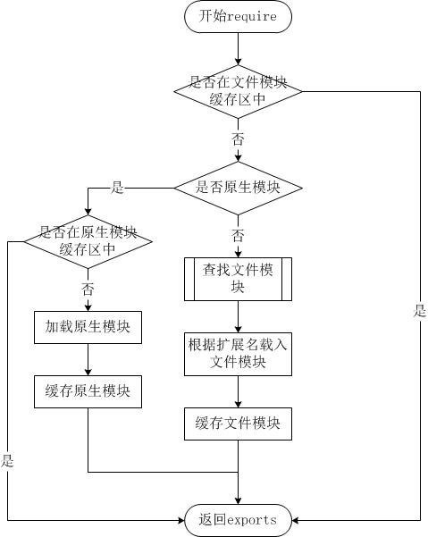

Node.jsモジュールシステム
Node.js モジュールシステムはその中核機能の一つであり、開発者がコードを小さく再利用可能なユニット（モジュールと呼ばれる）に整理することを可能にします。
モジュールは特定の機能をカプセル化した独立したファイルであり、他のファイルでインポートして使用することができます。
Node.js のモジュールシステムは Node.js アプリケーションを構築するための重要な基盤であり、開発者がコードを再利用可能で保守可能な小さな部分に分割できるようにします。
各モジュールは 1 つの JavaScript ファイルであり、関連する関数、オブジェクト、変数のセットを含みます。このようにして、Node.js は大規模なアプリケーションを管理する構造化された方法を提供し、コードをより明確で保守しやすくします。
Node.js では、すべてのファイルをモジュールとして扱うことができ、デフォルトで独立したスコープ内にあります。
モジュールシステムは CommonJS 仕様に従いますが、ES モジュールもサポートしています。
モジュールタイプ
Node.js は以下の種類のモジュールをサポートしています：
- 組み込みモジュール：Node.js に組み込まれているモジュール。例：
fs、http、pathなど。 - ユーザー定義モジュール：開発者によって作成されたモジュール。
- サードパーティモジュール：npm を介してインストールされたモジュール。例：
express、lodashなど。
組み込みモジュールのインポート
組み込みモジュールは Node.js に付属するモジュールで、Node.js をインストールした時点で環境に含まれているため、追加インストールは不要です。一般的な組み込みモジュールには fs、http、path、os、crypto などがあります。
組み込みモジュールをインポートするには、require()関数を使用してモジュール名を渡すだけです。例えば、ファイルシステムモジュールfs、path、httpをインポートするには、次のようにします：
// 导入文件系统模块
const fs = require('fs');
// 导入路径模块
const path = require('path');
// 导入 HTTP 模块
const http = require('http');ここで、fs は読み込むモジュール名を表す文字列です。Node.js はこれを組み込みモジュールとして自動的に認識し、対応する機能を読み込みます。
例
console.log('Operating System:', os.platform());
console.log('Total Memory:', os.totalmem());
サードパーティモジュールのインポート
サードパーティモジュールは開発者やオープンソースコミュニティによって公開されたモジュールで、npm（Node パッケージマネージャー）を使用してプロジェクトにインストールできます。一般的なサードパーティモジュールには express、lodash、axios などがあります。
サードパーティモジュールをインストールすると、これらのモジュールはプロジェクトの node_modules ディレクトリに配置されます。サードパーティモジュールをインポートするには、同様にrequire()関数を使用しますが、渡すのはモジュールの名前です。例えば、express フレームワークをインポートするには、次のようにします：
// 导入第三方模块 express
const express = require('express');
サードパーティモジュールをインポートする前に、npm でそのモジュールがインストールされていることを確認してください。例えば、express をインストールするには、次のコマンドで行えます：
npm install express
サードパーティモジュール lodash をインストールして、インポートテストを行います：
例
const array = [1, 2, 3, 4];
const reversedArray = lodash.reverse(array.slice()); // lodash を使用して配列を反転
console.log('Reversed Array:', reversedArray);
カスタムモジュールのエクスポートとインポート（CommonJS モジュール）
1. モジュールのエクスポート：module.exports 或 exportsを使用して関数、オブジェクト、または変数をエクスポートします。
2. モジュールのインポート：require()を使用してモジュールをインポートします。
モジュールのインポート
Node.js でモジュールを導入するのは非常に簡単です。次に、main.jsファイルを作成し、hello モジュールを導入します。コードは次のとおりです:
main.js ファイルコード：
hello.world();
上記の例では、コードrequire('./hello')は現在のディレクトリにあるhello.jsファイル（./は現在のディレクトリを表し、node.js ファイルのデフォルトの拡張子は.js）。
Node.js は exports と require の 2 つのオブジェクトを提供します。exports はモジュールが公開するインターフェースであり、require は外部からモジュールのインターフェース、つまり取得したモジュールの exports オブジェクトを取得するために使用します。
次に、hello.js ファイルを作成します。コードは次のとおりです：
hello.js ファイルコード：
console.log('Hello World');
}
上記の例では、hello.js は exports オブジェクトを介して world をモジュールのアクセスインターフェースとして公開しています。main.js では、require('./hello')を使用してこのモジュールを読み込むと、hello.js 内のexportsオブジェクトのメンバー関数に直接アクセスできます。
オブジェクトをモジュールにカプセル化したいだけの場合もあります。形式は次のとおりです：
module.exports = function() {
// ...
}
例：
hello.js ファイルコード：
function Hello() {
var name;
this.setName = function(thyName) {
name = thyName;
};
this.sayHello = function() {
console.log('Hello ' + name);
};
};
module.exports = Hello;
これで、このオブジェクトを直接取得できます：
main.js ファイルコード：
var Hello = require('./hello');
hello = new Hello();
hello.setName('BYVoid');
hello.sayHello();
モジュールインターフェースの唯一の変更点は、module.exports = Helloの代わりにexports.world = function(){}を使用することです。 外部からこのモジュールを参照する場合、そのインターフェースオブジェクトは出力される Hello オブジェクトそのものであり、元の exports ではありません。
module.exports と exports の違い：
module.exportsはエクスポートオブジェクトの実際の参照です。exportsであるmodule.exportsのショートカットです。直接代入することはできませんexports = ...。そうしないと参照が切れます。
カスタムモジュールのエクスポートとインポート（ES モジュール）
ES モジュールではimportとexport、これは現代の JavaScript のモジュール仕様です。
- ES モジュールでは
importとexportキーワードを使用し、ファイル拡張子を.mjs、またはpackage.json内で宣言します。"type": "module"。 - ES モジュールは静的インポート（
import ... from ...）と動的インポート（import()）。
例
export function greet(name) {
return `Hello, ${name}!`;
}
// main.mjs
import { greet } from './myModule.mjs';
console.log(greet('Bob')); // 出力：Hello, Bob!
モジュール読み込みのパス解決
1. コアモジュール：http や fs など、Node.js インストール時に含まれており、直接読み込むことができます。
const http = require('http');2. ローカルファイルモジュール：相対パスまたは絶対パスを使用して読み込み、指定が必要です。./ 或 /。
const myModule = require('./myModule');3. サードパーティモジュール：にありnode_modulesディレクトリ内にあり、モジュール名を入力するだけで読み込めます。
const express = require('express');
モジュールキャッシュ
モジュールキャッシュの仕組み：Node.js は読み込まれたモジュールをキャッシュしてパフォーマンスを向上させます。同じモジュールを再度 require() した場合、再読み込みするのではなく、キャッシュ内のモジュールを直接返します。
キャッシュの更新：モジュールを再読み込みするには、キャッシュを削除します：
delete require.cache[require.resolve('./myModule')];
循環依存
2 つ以上のモジュールが相互にインポートする場合、循環依存と呼ばれます。Node.js は単純な循環依存を処理できますが、一部のモジュールがエクスポートするオブジェクトが完全に初期化されていない可能性があります。
例
const b = require('./b');
console.log('a.js:', b.message);
module.exports = { message: 'Hello from a' };
// b.js
const a = require('./a');
console.log('b.js:', a.message);
module.exports = { message: 'Hello from b' };
// main.js
require('./a');
出力は、b.js が a.js をインポートした時点で、a.js がまだ完全に実行されていないため、a.message が undefined であることを示しています。
モジュールのラッピングとスコープ
Node.js は各モジュールを関数でラップするため、各モジュールが独立したスコープを持ちます。例：
// Node.js 内部将模块包装为类似这样的函数：
(function(exports, require, module, __filename, __dirname) {
// 模块代码在这里
});これは、モジュール内で定義された変数がグローバルスコープを汚染しないことを意味します。
サーバー側のモジュールはどこに置くのか
すでにお気づきかもしれませんが、私たちはコード内でモジュールを使用しています。次のように：
var http = require("http");
...
http.createServer(...);
Node.js にはhttpというモジュールが組み込まれており、コード内でそれをリクエストし、戻り値をローカル変数に代入します。
これにより、ローカル変数は http モジュールが提供するすべての公開メソッドを持つオブジェクトになります。
Node.js の require メソッドにおけるファイル検索戦略は次のとおりです：
Node.js には 4 種類のモジュール（ネイティブモジュールと 3 種類のファイルモジュール）が存在するため、require メソッドは非常に単純ですが、内部の読み込みは非常に複雑であり、読み込み優先順位もそれぞれ異なります。次の図のとおりです：

ファイルモジュールキャッシュからの読み込み
ネイティブモジュールとファイルモジュールの優先順位は異なりますが、どちらも既に存在するモジュールをファイルモジュールのキャッシュから優先的に読み込みます。
ネイティブモジュールからの読み込み
ネイティブモジュールの優先順位は、ファイルモジュールキャッシュの優先順位に次ぐものです。require メソッドはファイル名を解析した後、モジュールがネイティブモジュールリストにあるかどうかを優先的にチェックします。http モジュールを例にとると、ディレクトリ内に http/http.js/http.node/http.json ファイルが存在しても、require("http") はこれらのファイルからロードされず、ネイティブモジュールからロードされます。
ネイティブモジュールにもキャッシュ領域があり、同様にキャッシュ領域から優先的にロードされます。キャッシュ領域にロードされたことがない場合は、ネイティブモジュールのロード方式を呼び出してロードおよび実行します。
ファイルからの読み込み
ファイルモジュールキャッシュに存在せず、ネイティブモジュールでもない場合、Node.js は require メソッドに渡された引数を解析し、ファイルシステムから実際のファイルをロードします。ロードプロセスにおけるラッパーとコンパイルの詳細は前のセクションで説明済みです。ここでは、ファイルモジュールを検索するプロセスを詳しく説明します。その中には、知っておく価値のある詳細もいくつかあります。
require メソッドは以下のいくつかのパラメータの受け渡しを受け付けます：
- http、fs、path など、ネイティブモジュール。
- ./mod または ../mod、相対パスのファイルモジュール。
- /pathtomodule/mod、絶対パスのファイルモジュール。
- mod、非ネイティブモジュールのファイルモジュール。
パス Y で require(X) ステートメントを実行する順序：
1. 如果 X 是内置模块 a. 返回内置模块 b. 停止执行 2. 如果 X 以 '/' 开头 a. 设置 Y 为文件根路径 3. 如果 X 以 './' 或 '/' or '../' 开头 a. LOAD_AS_FILE(Y + X) b. LOAD_AS_DIRECTORY(Y + X) 4. LOAD_NODE_MODULES(X, dirname(Y)) 5. 抛出异常 "not found" LOAD_AS_FILE(X) 1. 如果 X 是一个文件, 将 X 作为 JavaScript 文本载入并停止执行。 2. 如果 X.js 是一个文件, 将 X.js 作为 JavaScript 文本载入并停止执行。 3. 如果 X.json 是一个文件, 解析 X.json 为 JavaScript 对象并停止执行。 4. 如果 X.node 是一个文件, 将 X.node 作为二进制插件载入并停止执行。 LOAD_INDEX(X) 1. 如果 X/index.js 是一个文件, 将 X/index.js 作为 JavaScript 文本载入并停止执行。 2. 如果 X/index.json 是一个文件, 解析 X/index.json 为 JavaScript 对象并停止执行。 3. 如果 X/index.node 是一个文件, 将 X/index.node 作为二进制插件载入并停止执行。 LOAD_AS_DIRECTORY(X) 1. 如果 X/package.json 是一个文件, a. 解析 X/package.json, 并查找 "main" 字段。 b. let M = X + (json main 字段) c. LOAD_AS_FILE(M) d. LOAD_INDEX(M) 2. LOAD_INDEX(X) LOAD_NODE_MODULES(X, START) 1. let DIRS=NODE_MODULES_PATHS(START) 2. for each DIR in DIRS: a. LOAD_AS_FILE(DIR/X) b. LOAD_AS_DIRECTORY(DIR/X) NODE_MODULES_PATHS(START) 1. let PARTS = path split(START) 2. let I = count of PARTS - 1 3. let DIRS = [] 4. while I >= 0, a. if PARTS[I] = "node_modules" CONTINUE b. DIR = path join(PARTS[0 .. I] + "node_modules") c. DIRS = DIRS + DIR d. let I = I - 1 5. return DIRS
その他の拡張exports と module.exports の使用方法
外部に属性やメソッドを公開したい場合は、〜を使いますexportsそれで十分です。オブジェクト（class に似ており、多くの属性やメソッドを含む）を公開したい場合は、〜を使いますmodule.exports。